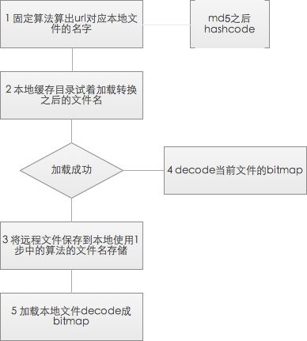
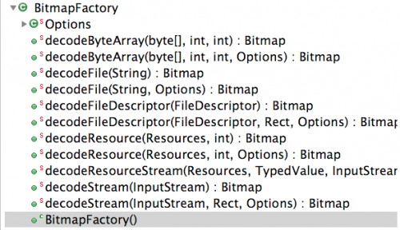

由于内存的有限，图片对性能优化起到了很大的作用，如何管理图片 以及如何对图片进行加载就需要进行很多处理。本文从以下2个问题来简单介绍下图片处理的思路
1 如何在listview中a 加载远程图片 b 如何利用viewhold c 回收和reload图片
2 如何在图片管理中加入本地图片的支持 以及如何处理大尺寸图片
正文
a 使用异步线程加载url对应的图片
新建一个类 继承AsyncTask，传入url 根据这个远程的url，在实现类中进行处理

一般1中的固定算法都是对当前的url进行md5运算之后取hashcode，有一个地方需要注意，如果服务器支持多种图片存储 比如针对图片m.jpg服务器自动在后台处理成m_100X100.jpg 这种url 那么客户端处理的时候需要根据当前的像素密度和当前的imageView的大小,添加合适的后缀。
即在算出本地文件之前需要将pic_size加入。url = url+pic_size;其中pic_size主要根据像素密度计算。
像素密度定义
像素密度（pixels per inch），也称PPi，即每英寸屏幕所拥有的像素数，像素密度越大，显示画面细节就越丰富。
计算方法
像素密度={1+√[(长度像素数-1)^2+(宽度像素数-1)^2]}/屏幕尺寸 而小密度的手机上的ImageView要在大像素密度上展示的区块差不多大小的话就要和缩放因子进行处理
比如你需要在缩放因子为1 即大部分320*480机器上的ImageView 显示在高分辨率如1.5的800*600 可能缩放因子就是1.5 原来100*100dp的图片就需要乘以1.5即150X150的图片 然后根据服务端的支持的分辨率查找一个url 本例子服务端类似的分辨率支持 100X100 160X160 240X240 所以可以使用160x160的图片 即不会显示失真 也不会使用大图片造成更多的内存浪费 类似的代码如下
final float scale=MyApplication.getContext.getResources()
.getDisplayMetrics(.scaledDensity;
if(scale==1){
return 100X100.jpg
}else if(scale==1.5){
return 160X160.jpg
}else{
return 240X240.jpg
} 拿到了分辨率的后缀 就可以通过url = url+pic_size;来组装新的url了 再将新的url去获取md5加密之后的hashcode 做为本地存储的文件名。当然其他的算法也是可以的 只要确定相同的url得到的文件名是一样 不一样的文件名（分辨率不同也属于不一样的文件名）得到的结果不会重复就可以。
3中将本地的存储文件名和对应的url以及存储的文件三者对应起来了，后续如果再次请求当前的图片而且是当前的分辨率的时候就回直接通过步骤4取本地的文件 不必重新请求网络。不过这样对服务端的要求比较多，最好有存储图片的服务器 服务器后台对上传的图片自动生成若干个分辨率的文件。
如果你的服务端不支持自动生成多个分辨率或者说加载的图片是本地的。为了使用decode方法时不会outofmemory 则需要先进行分辨率的预判，进行缩放之后再进行加载，只加载适合屏幕的内容。将在第2个大问题中说明。
部分代码:
class ImageAsyncDownloader extends
AsyncTask<ImageAsyncParam, Void, ImageAsyncResult> {
@Override
protected ImageAsyncResult doInBackground(ImageAsyncParam... params) {
Log.d(TAG, 'ImageAsyncDownloader.doInBackground's threadId = ' + Thread.currentThread().getId());
String url = params[0].url;
ImageAsyncResult result = new ImageAsyncResult();
result.imageView = params[0].imageView;
result.url = url;
/** 先从本地方法里面获取 加载通过md5加密之后的文件名 */
result.bitmap = getBitmapFromLocalByUrl(url);
//如果本地无法加载
if (result.bitmap != null)
return result;
InputStream is =HttpDownloader.requestStreamByUrlNoException(url);
//加载远程成功
if (is != null) {
//加载到本地目录 文件名=md5之后hashcode
FileUtil.saveToDownloadByUrl(url, is);
result.bitmap = getBitmapFromLocalByUrl(url);
}
return result;
}
@Override
protected void onPostExecute(ImageAsyncResult result) {
super.onPostExecute(result);
//比对当前加载的imageView对应的url是否已经改变 如果没改变加载数据到imageView
checkImageViewAlive('ImageAsyncDownloader', result);
mUrlAsyncTaskMap.remove(result.url);
}
}其中
b 如何重用listview的cell
listview加载的时候因为屏幕的显示cell的数量是有限的，所以在界面显示的cell永远不是全部。listView的adaptor要重写getView方法来自定义cell，系统会将使用过的ContentView做为参数返回。重复的加载view来展示cell是最慢的一种方法，正确的做法是当返回的参数中contentView不为空的时候重新当前的view并将当前cell的数据模型绑定到tag里。
声明一个ViewHolder类 保存cell中需要展示的数据结构.在getView中先判断给定的参数contentView，如果为空则加载一个新的自定义cell界面，然后将数据存入viewHolder，此viewHolder存在contentView的tag中。如果contgentView不为空则直接重用。重新设置数据，返回给listView. ps:因为contentView是复用的，且tag保存的viewHolder是数据的内容，因此重用之前一般要对viewHolder进行初始化，因为你在contentView对内容会进行赋值或者隐藏和显示操作，如果你不初始化viewHolder，可能下次拿到的viewHolder会有不确定的展示效果 比如上一个cell的getView方法将某个控件置不显示View.GONE 下一个重用这个viewHolder的时候可能没有设置，就造成了虽然有 数据但是不展示的问题。所以最好同意在拿到上一次使用过的有状态的ViewHolder的时候先初始化。
public class MyArrayAdapter extends ArrayAdapter<WeiboInfo> {
private ImageView iv;
public MyArrayAdapter(Context context, int textViewResourceId, List<WeiboInfo> objects) {
super(context, textViewResourceId, objects);
}
class ViewHolder {
//是否是vip用户
ImageView vipview;
//头像显示
ImageView iv;
//用户名显示
TextView nameTextView;
//正文显示
TextView textTextView;
//时间显示
TextView dateTextView;
//重置初始化状态
public void init(){
....
}
}
@Override
public View getView(int position, View convertView, ViewGroup parent) {
if (null == convertView) {
//如果为空新初始化一个view
convertView =LayoutInflater.from(getContext()).inflate(R.layout.my_simple_list_item,null);
//初始化一个viewHolder
ViewHolder vh = initVHolder(convertView);
convertView.setTag(vh);
}
//contentView可以复用
ViewHolder viewHolder = (ViewHolder) convertView.getTag();
//将viewHolder中数据初始化置默认值
viewHolder.init();
WeiboInfo i = getItem(position);
boolean isVip = i.getIsVIP();
if (isVip) {
viewHolder.vipview.setVisibility(View.VISIBLE);
} else {
viewHolder.vipview.setVisibility(View.INVISIBLE);
}
viewHolder.nameTextView.setTextColor(Color.BLUE);
viewHolder.nameTextView.setText(Html.fromHtml(i.getName()));
//微博内容
viewHolder.textTextView.setText(Html.fromHtml(i.getTitle()));
//发布时间和来源
viewHolder.dateTextView.setText(i.getDateString() + '来自:' + i.getFrom());
//dateTextView.setText('发布时间:2012-12-30');
//从缓存中加载图片对象如果没有的话根据url初始化一个，再缓存起来
new AynsImagerGetter().execute(new AynsImagerViewInitModel(viewHolder.iv, i.getName(), i
.getHeadURL(), null));
return convertView;
}
private ViewHolder initVHolder(View convertView) {
ViewHolder vh = new ViewHolder();
vh.vipview = (ImageView) convertView.findViewById(R.id.imageViewvip);
vh.nameTextView = (TextView) convertView.findViewById(R.id.name);
vh.textTextView = (TextView) convertView.findViewById(R.id.text);
vh.dateTextView = (TextView) convertView.findViewById(R.id.from);
vh.iv = (ImageView) convertView.findViewById(R.id.imageView1);
return vh;
}
}在需要加载远程图片的时候使用自定义的ImageManager类加载图片， 并且缓存对应的数据，在必要的时候回收或者重新从本地加载imageView对应的图片。下面说下回收和重新加载的处理
c 如何缓存图片 回收图片和重新加载图片
ImageManager做为一个图片处理的类，负责整个异步加载的图片的下载、本地目录存取和异步加载，除此之外还要对图片的回收 onresume时的重新加载 以及圆角处理等功能。下面以一个简单的imageManager需求来写一个简单的示例。
缓存的目的是增加加载速度 避免重复加载。 回收和重新加载的目的是释放内存不会内存溢出。
缓存的策略已经在a里描述了，基本上就是按照一个特定的规律把远程文件url 转换成本地存储的文件名 然后拿这个文件索引本地缓存目录 存在的直接使用 不存在的从服务端下载到本地按照本地存储文件名存储。 其实这样还是会有问题：可能url一样的2个文件代表的文件实际上是两个不同的图片，而本地已经缓存一张的情况下 如果引用另一张也会引用到已经缓存的 比如很多按照上传文件存储在服务端的文件，就要求服务端要对文件名称有一个重新生成的策略，不会两个问题出现同一个名字。
缓存的数据结构。
//~~~数据结构
//线程安全的记录每个avtivity对应一个单独的ImageManager
private static Map<String, ImageManager> mActivityImageManagerMap = Collections.synchronizedMap(new HashMap<String, ImageManager>());
// 针对每个实例有单独的cache
private boolean mIsRecycledOnPuase = false; // 是否在onPause时已回收
private String mActivity; // 所在activity
//url对应的位图 缓存在jvm加载时重用
private ConcurrentHashMap<String, SoftReference<Bitmap>> mBitmapRefCache = new ConcurrentHashMap<String, SoftReference<Bitmap>>();
//imageview对应url 用以异步加载图片（异步加载完当前的图片之后主线程判断imageView对应的url是否改变 没改变的情况才加载到对应的imageView中）
private ConcurrentHashMap<ImageView, String> mImageViewUrlMap = new ConcurrentHashMap<ImageView, String>();加载图片和缓存策略:
对照ImageManager 一个示例来看 ps 部分代码可能不是很全
public class ImageManager {
//~~~数据结构
//线程安全的记录每个avtivity对应一个单独的ImageManager
private static Map<String, ImageManager> mActivityImageManagerMap = Collections
.synchronizedMap(new HashMap<String, ImageManager>());
// 针对每个实例有单独的cache
private boolean mIsRecycledOnPuase = false; // 是否在onPause时已回收
private String mActivity; // 所在activity
//url对应的位图 缓存在jvm加载时重用
private ConcurrentHashMap<String, SoftReference<Bitmap>> mBitmapRefCache = new ConcurrentHashMap<String, SoftReference<Bitmap>>();
//imageview对应url 用以异步加载图片（异步加载完当前的图片之后主线程判断imageView对应的url是否改变 没改变的情况才加载到对应的imageView中）
private ConcurrentHashMap<ImageView, String> mImageViewUrlMap = new ConcurrentHashMap<ImageView, String>();
private ImageManager(String activity) {
mActivity = activity;
}
/**
* 获取一个当前activity对应的imageManager的实例
**/
public static ImageManager getInstance(String activity) {
ImageManager imageManager = mActivityImageManagerMap.get(activity);
if (imageManager == null) {
imageManager = new ImageManager(activity);
mActivityImageManagerMap.put(activity, imageManager);
}
return imageManager;
}
/**
* 从缓存中获取已经存在的实例，若不存在返回null 在activity的生命周期的onresume会将固定数量之外的activity对应的imageManager对应的图片全部回收
* 并且在自我管理activity的activityManager中新增activity会将固定数量之外（一般是2 or 3）的activity对应的图像全部回收掉
* @param activity
* @return
*/
public static ImageManager getInstanceFromCache(String activity) {
if (StringUtil.isEmpty(activity)) {
return null;
}
return mActivityImageManagerMap.get(activity);
}
/**
* 因为avtivityManager会将当前往前超过一定数量的activity对应的位图回收掉，所以当activity重新进入前台时，恢复指定activity下的所有bitmap图片
*/
public void reloadBitmapOnResume() {
if (!mIsRecycledOnPuase) { // 判断之前是否已回收
return;
}
// 首先对所有ImageView设置默认图片
for (Iterator<Map.Entry<ImageView, String>> itr = mImageViewUrlMap
.entrySet().iterator(); itr.hasNext();) {
Map.Entry<ImageView, String> imageViewUrl = itr.next();
final boolean needRound = (Boolean) imageViewUrl.getKey().getTag(
TAG_KEY_NEED_ROUND);
final int defaultLoading = (Integer) imageViewUrl.getKey().getTag(
TAG_KEY_DEFAULT_LOADING);
downloadImage(imageViewUrl.getValue(), imageViewUrl.getKey(), null,
defaultLoading, needRound);
}
// 设置为未回收标记位
mIsRecycledOnPuase = false;
}
/**
* 当activity进入后台时，回收指定activity下的所有bitmap图片
*/
public void recycleBitmapOnPause() {
if (isRejectRecycle()) {
recycleNotUsedBitmap();
return;
}
// 首先对所有ImageView设置默认图片
for (Enumeration<ImageView> enu = mImageViewUrlMap.keys(); enu
.hasMoreElements();) {
ImageView imageView = enu.nextElement();
final int defaultLoading = (Integer) imageView
.getTag(TAG_KEY_DEFAULT_LOADING);
setViewByResourceId(imageView, defaultLoading, false);
}
// 回收所有bitmap
recycleAllBitmap('OnPause');
// 设置为已回收标记位
mIsRecycledOnPuase = true;
}
/**
* 页面销毁时回清空对应的imageManager 回收所有没回收的位图
*/
public void recycleAllBitmapOnDestroy() {
recycleAllBitmap('onDestroy');
mActivityImageManagerMap.remove(mActivity);
}
/**
* 回收指定activity对应的bitmap缓存下的图片
*/
private void recycleAllBitmap(String from) {
int numOfBitmapNullOrRecycled = 0;
final String fromLog = 'recycleAllBitmap' + from + ' exec activity='
+ mActivity;
for (Iterator<SoftReference<Bitmap>> itr = mBitmapRefCache.values()
.iterator(); itr.hasNext();) {
Bitmap bitmap = itr.next().get();
if (bitmap != null && !bitmap.isRecycled()) {
Log.d(TAG, fromLog + ',recycle bitmap=' + bitmap);
recycle(bitmap, fromLog);
bitmap = null;
} else {
numOfBitmapNullOrRecycled++;
}
}
Log.i(TAG,
fromLog + ', bitmapSoftRefCache.size = '
+ mBitmapRefCache.size()
+ ', numOfBitmapNullOrRecycled='
+ numOfBitmapNullOrRecycled + ',this=' + this);
}
/**
* 回收当前activity对应的无用bitmap缓存下的图片
*/
private void recycleNotUsedBitmap() {
int beforeSize = mBitmapRefCache.size();
int numOfBitmapNullOrRecycled = 0;
for (Iterator<Map.Entry<String, SoftReference<Bitmap>>> itr = mBitmapRefCache
.entrySet().iterator(); itr.hasNext();) {
Map.Entry<String, SoftReference<Bitmap>> bitmapEntry = itr.next();
// 判断当前bitmap对应的url是否还被使用
if (!mImageViewUrlMap.containsValue(bitmapEntry.getKey())) {
// 不被使用，直接回收
Bitmap bitmap = bitmapEntry.getValue().get();
if (bitmap != null && !bitmap.isRecycled()) {
Log.d(TAG, 'recycleNotUsedBitmap exec activity='
+ mActivity + ',recycle bitmap=' + bitmap);
recycle(bitmap, 'recycleNotUsedBitmap');
bitmap = null;
} else {
numOfBitmapNullOrRecycled++;
}
mBitmapRefCache.remove(bitmapEntry.getKey());
}
}
}
/**
**异步加载图片
**/
public void downloadImage(String url, ImageView imageView, String picSize,
int loadingResourceId, boolean needRound) {
downloadImage(url, imageView, loadingResourceId, -1, picSize, needRound);
}
/**
**异步加载图片
**/
public void downloadImage(String url, ImageView imageView,
int loadingResourceId, String picSize) {
downloadImage(url, imageView, loadingResourceId, -1, picSize, false);
}
public void downloadImage(String url, ImageView imageView,
int loadingResourceId, int errorImageResourceId, String picSize,
boolean needRound) {
// 设置加载的时候的图片 如果没有设置则设置系统默认的
if (loadingResourceId == -1) {
loadingResourceId = R.drawable.default_loading;
}
if (imageView == null) {
return;
}
// 将是否需要圆角,默认加载设置到tag中，便于恢复时使用
imageView.setTag(TAG_KEY_NEED_ROUND, Boolean.valueOf(needRound));
imageView.setTag(TAG_KEY_DEFAULT_LOADING, loadingResourceId);
//如果url错误 设置错误的图标返回
if (StringUtil.isBlank(url)) {
if (errorImageResourceId == -1) {
errorImageResourceId = loadingResourceId;
}
putImageViewUrlMapping('Cache', imageView, url);
setViewByResourceId(imageView, errorImageResourceId, false);
return;
}
// 重设url，增加尺寸支持 来自网络的图片才需要增加尺寸
if (picSize != null && !isLocalUrl(url)) {
url = url + picSize;
}
// 首先从JVM、本地文件中获取
Bitmap bitmap = getBitmapFromCacheByUrl(url, needRound);
if (bitmap != null) {
putImageViewUrlMapping('Cache', imageView, url);
setViewByBitmap(imageView, bitmap, false);
return;
}
setViewByResourceId(imageView, loadingResourceId, false);
// 从网络异步获取
putImageViewUrlMapping('Network', imageView, url);
try {
ImageAsyncDownloader imageAsyncDownloader = new ImageAsyncDownloader();
imageAsyncDownloader.execute(new ImageAsyncParam(url, imageView,
needRound));
} catch (RejectedExecutionException e) {
Log.e(TAG, 'imageAsyncDownloader is rejected by ', e);
}
}
/**
* 缓存当前activity下的imageView
*
* @param imageView
* @param url
*/
private void putImageViewUrlMapping(String from, ImageView imageView,
String url) {
mImageViewUrlMap.put(imageView, url);
}
/**
* 从JVM缓存或本地文件缓存中生成bitmap
*
* @param url
* @param needRound
* 是否需要圆角处理
* @return
*/
private Bitmap getBitmapFromCacheByUrl(String url, boolean needRound) {
// 首先从当前JVM内部cache获取
SoftReference<Bitmap> ref = mBitmapRefCache.get(url);
if (ref != null) {
Bitmap bm = ref.get();
if (bm != null && !bm.isRecycled()) {
return bm;
} else {
mBitmapRefCache.remove(url);
}
}
return null;
}
/**
* 生成带有圆角的图片
*
* @param bitmap
* @return
*/
public Bitmap getRoundedCornerBitmap(Bitmap bitmap) {
Bitmap output = null;
try {
output = Bitmap.createBitmap(bitmap.getWidth(), bitmap.getHeight(),
Config.ARGB_4444);
} catch (OutOfMemoryError e) {
Log.e(TAG, 'getRoundedCornerBitmap:', e);
}
if (output == null) {
return null;
}
Canvas canvas = new Canvas(output);
final int color = 0xff424242;
final Paint paint = new Paint();
final Rect rect = new Rect(0, 0, bitmap.getWidth(), bitmap.getHeight());
final RectF rectF = new RectF(rect);
final float roundPx = 10;
paint.setAntiAlias(true);
canvas.drawARGB(0, 0, 0, 0);
paint.setColor(color);
canvas.drawRoundRect(rectF, roundPx, roundPx, paint);
paint.setXfermode(new PorterDuffXfermode(Mode.SRC_IN));
canvas.drawBitmap(bitmap, rect, rect, paint);
recycle(bitmap, 'getRoundedCornerBitmap');
return output;
}
private void setViewByResourceId(ImageView imageView,
int loadingResourceId, boolean isBackground) {
if (loadingResourceId != -1) {
if (isBackground) {
imageView.setBackgroundResource(loadingResourceId);
} else {
imageView.setImageResource(loadingResourceId);
}
imageView.invalidate();
}
}
//设置得到的位图到对应的imageView中
private void setViewByBitmap(ImageView imageView, Bitmap bm,
boolean isBackground) {
if (bm != null && !bm.isRecycled()) {
if (isBackground) {
imageView.setBackgroundDrawable(new BitmapDrawable(bm));
} else {
imageView.setImageBitmap(bm);
}
imageView.invalidate();
}
}
private static void closeInputStream(InputStream is) {
try {
if (is != null) {
is.close();
}
} catch (IOException e) {
}
}
class ImageAsyncParam {
String url;
ImageView imageView;
boolean needRound;
public ImageAsyncParam(String url, ImageView imageView,
boolean needRound) {
this.url = url;
this.imageView = imageView;
this.needRound = needRound;
}
}
class ImageAsyncResult {
ImageView imageView;
Bitmap bitmap;
String url;
}
class ImageAsyncDownloader extends
TaobanAsyncTask<ImageAsyncParam, Void, ImageAsyncResult> {
@Override
protected ImageAsyncResult doInBackground(ImageAsyncParam... params) {
String url = params[0].url;
ImageAsyncResult result = new ImageAsyncResult();
result.imageView = params[0].imageView;
result.url = url;
/** 先从本地方法里面获取 */
result.bitmap = getBitmapFromLocalByUrl(url, params[0].needRound);
if (result.bitmap != null)
return result;
//网络加载得到流
InputStream is = HttpDownloader.requestStreamByUrlNoException(url);
if (is != null) {
//decode存到本地目录中
FileUtil.saveToLocalFileByUrl(url, is);
//再从本地目录读取
result.bitmap = getBitmapFromLocalByUrl(url,
params[0].needRound);
}
return result;
}
@Override
protected void onFinishExecute(ImageAsyncResult result) {
super.onFinishExecute(result);
//如果获取的位图对应的url 和imagerView当前对应的url是同一个url 则加载到图片 否则说明已经过期的加载 不需要加载
if (result != null && result.bitmap != null) {
String newUrl = mImageViewUrlMap.get(result.imageView);
if (result.url.equals(newUrl)) {
setViewByBitmap(result.imageView, result.bitmap, false);
}
}
}
}
//从本地加载图片
private Bitmap getBitmapFromLocalByUrl(String url, boolean needRound) {
InputStream is = FileUtil.getInputStreamByUrl(url);
if (is != null) {
Bitmap bitmap = getBitmapByInputStream(url, is, needRound);
return bitmap;
}
return null;
}
//回收imageView上的位图
public static void recycledImageView(ImageView imageView) {
Drawable drawable = imageView.getDrawable();
if (drawable == null && !(drawable instanceof BitmapDrawable)) {
return;
}
Bitmap b = ((BitmapDrawable) drawable).getBitmap();
imageView.setImageDrawable(null);
recycle(b, 'recycledImageView');
}
//刷新ImageView 用于图片地址不变 ，图片内容变更
public void reloadImageVIew(ImageView imageView, Bitmap newBitmap,
String url) {
SoftReference<Bitmap> reference = mBitmapRefCache.get(url);
Bitmap oldBitmap = null;
if (reference != null)
oldBitmap = reference.get();
mBitmapRefCache.put(url, new SoftReference<Bitmap>(newBitmap));// 刷新内存信息
for (Entry<ImageView, String> entry : mImageViewUrlMap.entrySet()) {
if (entry.getValue().equals(url)) {
// 刷新当前Bitmap
entry.getKey().setImageBitmap(newBitmap);
}
}
recycle(oldBitmap, 'reloadImageVIew');// 回收旧的bitmap
mImageViewUrlMap.put(imageView, url);
imageView.setImageBitmap(newBitmap);
}
public static void recycle(Bitmap b, String src) {
if (b != null && !b.isRecycled()) {
Log.v(TAG, 'recycle by ' + src + ',the bitmap:' + b);
b.recycle();
}
}
}
对应回收策略和其进行的操作如下
| activityManger管理activity时 增加当前activity到map中的时候 回收掉当前activity之前n个的activity对应的所以位图 n是可以配置的如果想要保留2个activity则n=3 | recycleBitmapOnPause回收当前activity所有的位图 并给对应的imageView设置默认的图片 |
| 当activity被销毁时 activityManager 从map中删除当前的activity 当前activity对应的所有的位图回收 | recycleAllBitmapOnDestroy 操作同上 |
| activity 的increate方法中将此activity加入activityManager管理的map中 初始化当前activity对应imageManager | getInstance 从缓存中加载 如果没有初始化一个imageManager并将对应关系放入activity和imageManager对应关系的map中 |
| activity 的回到前台的时候 onResume 方法中重新加载该activity对应的所有位图 | reloadBitmapOnResume 将当前avtivity缓存的imageview对应的url都加载到对应的imageView中 |
本地图片的加载和远程url的图片加载有2个问题 1 ：尺寸的不定性，不能确定你要加载的图片的大小，不像url这种你可以根据服务端的支持来活的适合的分辨率的图片 2：缓存的问题 ImageManager中到目前位置都是把url和对应的位图来做对应的而且imageView也是和url的关系对应的。就需要1 把本地文件的完整路径做为url来使用 2 根据原图和目标imageView的大小来进行压缩处理
处理方式是进行尺寸的缩放，BitmapFactory的decodeStream方法加载的时候先进行尺寸的判断，获取到尺寸之后，根据图像真实的尺寸和要转换成的尺寸，设置缩放的比例再进行编码转换成图像。同样通过url转换成本地存储文件名的规则转换成本地文件之后重新存储成要转换的尺寸。 这样把本地的完整文件目录转换成本地存储文件名之后。
详细看下BitmapFactory

这些方法都是将本地目录 inputstream 或者是静态资源转换成bitmap的方法。其中Options可以指定对应的选项，
1、inPreferredConfig 指定decode到内存中，手机中所采用的编码，可选值定义在Bitmap.Config中。缺省值是ARGB_8888。
2、inJustDecodeBounds 如果设置为true并不会真的返回bitmap，而是会根据图像的实际大小填充outWidth和outHeigth的值
3、inSampleSize 设置decode时的缩放比例，一般是根据实际大小和需要转换成的大小比来决定，需要注意的是如果实际大小比需要转换的还要小，那么这个值是1.
利用Options的这些值就可以高效的得到一幅缩略图。
public static void saveLocalImgsToCacheDir(String fileOriginPathOrURL,) {
String newFilePath = null;//经过md5之后转换成本地存储的文件名
Options opts = null;//decode方法的内容
FileOutputStream out = null;
File file = null;
//转换文件名 HEAD是存放本地缓存文件的目录
filePath =HEAD+EncryptUtil.md5Hex(fileOriginPathOrURL) ;
file = new File(filePath);
if (file.exists()) {// 如果已经缓存过，则不执行
continue;
}
opts = new Options();
//参数表示是否只是计算大小 并将大小放在outWidth和outHeigth中
opts.inJustDecodeBounds = true;
BitmapFactory.decodeFile(src, opts);
//判断如果大小比当前屏幕大则指定缩放比例 如果比当前屏幕小则保留1 不缩放
opts.inSampleSize = Math.max(1, opts.outWidth
/ Constant.SCREEN_WIDTH);
try {
//重新设置只计算大小为false 实际decode文件
opts.inJustDecodeBounds = false;
Bitmap bitmap = BitmapFactory.decodeFile(src, opts);
if (bitmap != null) {
out = new FileOutputStream(file);
//转换成jpg
bitmap.compress(Bitmap.CompressFormat.JPEG, 80, out);
}
} catch (Throwable tr) {
Log.e(TAG, 'saveLocalImgToCacheDir error:', tr);
} finally {
file = null;
filePath = null;
opts = null;
FileUtil.clostOutputStream(out);
}
} 需要注意的是，把本地的图像的完成路径做为url来使用进行文件名转换，存储等的时候在步骤1中对url进行文件名尺寸替换这一步要排除掉。即:
// 重设url，增加尺寸支持 来自网络的图片才需要增加尺寸 本地的url即本地的文件的完整路径名可以定义file://为文件的头部，而来自网络的一般是http开头从而区别开了
if (picSize != null && !isLocalUrl(url)) {
url = url + picSize;
}
|
|